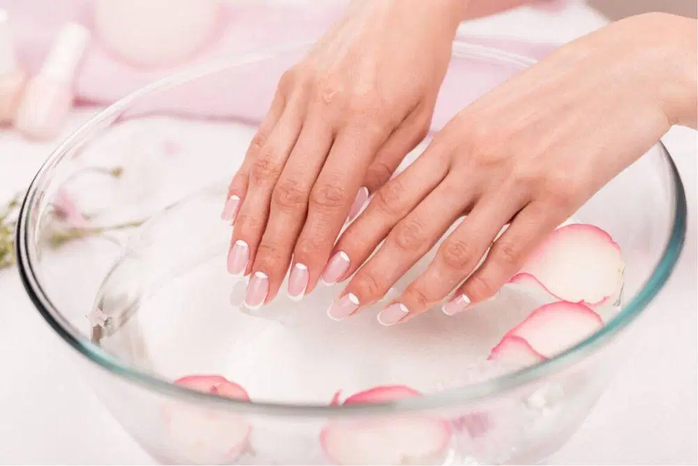
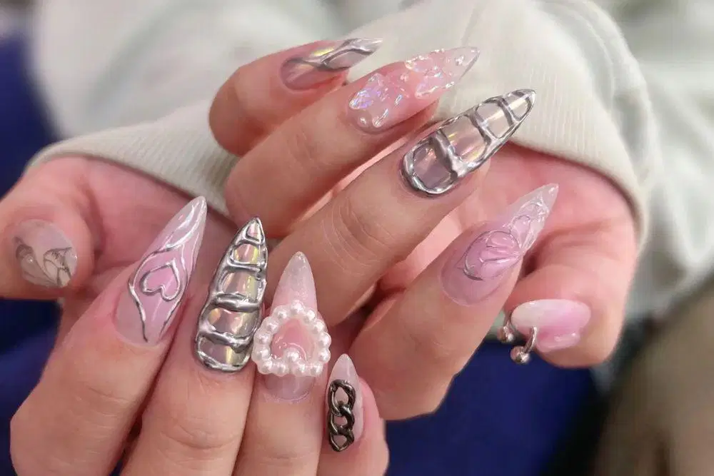

|
|
LEMBAR KERJA PRAKTIKUM (JOBSHEET)SENI MENGHIAS KUKU (NAIL ART & CARE) |
|
- Peserta mampu memahami anatomi dasar kuku, prosedur higienitas, dan sanitasi alat dalam perawatan kuku (manicure dasar).
- Peserta mampu mengidentifikasi dan memilih jenis kuteks (base coat, gel/regular polish, top coat) serta alat hias kuku secara tepat.
- Peserta mampu mempraktikkan teknik persiapan lempeng kuku (nail prepping, shaping, & cuticle care) secara aman.
- Peserta mampu mengaplikasikan teknik lukis kuku dasar (dotting, striping, ombre/gradasi, atau stiker/rhinestone) dengan rapi dan presisi.
- Peserta memahami prosedur pengeringan (UV/LED lamp) serta perawatan pasca-aplikasi agar hiasan kuku tahan lama.
Nail Art adalah seni menghias, mempercantik, dan memperindah tampilan kuku menggunakan berbagai media warna, tekstur, dan ornamen dekoratif. Dalam industri tata rias modern dan kecantikan pengantin, seni hias kuku telah menjadi elemen penting untuk melengkapi penampilan estetis secara menyeluruh.
Kunci keberhasilan Nail Art yang tahan lama terletak pada tahapan persiapan lempeng kuku (nail prepping). Pembersihan minyak alami kulit, pembentukan ujung kuku yang simetris, dan penggunaan lapisan pelindung dasar (base coat) berfungsi mencegah pigmen warna merusak matriks kuku sekaligus merekatkan lapisan pewarna secara optimal.
Teknik & Jenis Pewarna Kuku:
-
Kuteks Reguler (Regular Polish)
Pewarna berbasis pelarut organik yang mengering secara alami lewat udara. Mudah diaplikasikan untuk latihan sketsa dan dapat dibersihkan secara praktis menggunakan nail polish remover (aseton). -
Kuteks Gel (Gel Polish)
Pewarna berbasis oligomer yang membutuhkan penyinaran lampu UV/LED khusus untuk proses polimerisasi (pengeringan). Menghasilkan kilau tinggi, tahan gores, dan mampu bertahan hingga 3–4 minggu pada lempeng kuku.
| BAHAN (MATERIALS) | ALAT (TOOLS) |
|---|---|
|
|

Gambar 1.1: Tahap Persiapan & Shaping Kuku

Gambar 1.2: Pengaplikasian Motif & Top Coat
| No. | Tahapan Kerja | Deskripsi & Instruksi Pengerjaan |
|---|---|---|
| 1 | Sanitasi Alat & Tangan | Semprotkan alkohol 70% pada tangan praktikan dan jari model. Pastikan seluruh peralatan telah steril sebelum digunakan. |
| 2 | Perawatan Kutikula & shaping | Oleskan cuticle softener, dorong kutikula perlahan. Bentuk ujung kuku (oval/square) menggunakan kikir kuku secara searah. |
| 3 | Nail Buffing & Dehydrating | Buff permukaan kuku perlahan untuk menghilangkan kilau minyak. Bersihkan sisa debu dengan alkohol atau dehydrator. |
| 4 | Aplikasi Base Coat | Oleskan Base Coat tipis dan merata. Keringkan di bawah lampu UV/LED selama 30–60 detik. |
| 5 | Aplikasi Warna Dasar & Motif | Oleskan warna dasar (2 lapis), cure tiap lapisan. Buat motif hias (polka, floral, garis, foil) mengunakan kuas detailer / dotting tool. |
| 6 | Pemasangan Ornamen (Opsional) | Tempelkan rhinestone atau foil dekoratif menggunakan sedikit gel perekat pada posisi fokal yang diinginkan. |
| 7 | Sealing dengan Top Coat | Melindungi motif dengan mengoleskan Top Coat (glossy/matte) menutup hingga ujung tepi kuku. Cure selama 60 detik. |
| 8 | Finishing & Cuticle Nourishing | Bersihkan lapisan lengket (bila ada) dengan alkohol wipe. Usapkan cuticle oil di sekitar area kulit kuku sambil dipijat lembut. |
Hasil Akhir Praktikum:
- Hasil hiasan kuku (Nail Art) yang rapi, simetris, berkilau, dan bebas dari gelembung/noda kuteks di kulit sekitar kuku.
- Dokumentasi/foto portofolio hasil praktikum kuku tangan sebelum dan sesudah diaplikasikan.
- Kerapian pembersihan kutikula dan presisi bentuk kuku (nail shaping).
- Rataan sapuan warna dasar dan kerapian detail lukisan motif (bebas garis menggumpal).
- Kebersihan tepi kulit kuku (bebas dari lelehan kuteks) dan ketahanan sealing top coat.
| No | Aspek Penilaian | Skor Max | Skor Siswa | Catatan / Masukan Instruktur |
|---|---|---|---|---|
| 1 | Persiapan Sanitasi, Nail Prepping & Shaping | 20 | ||
| 2 | Teknik Aplikasi Warna Dasar & Pengeringan UV | 25 | ||
| 3 | Kreativitas Motif, Kerapian Lukisan & Ornamen | 40 | ||
| 4 | Kebersihan Area Kerja & Aplikasi Cuticle Care | 15 | ||
| TOTAL SKOR | 100 | |||
|
Pengajar / Instruktur, ( _______________________ ) |
Siswa / Peserta Praktikum, ( _______________________ ) |